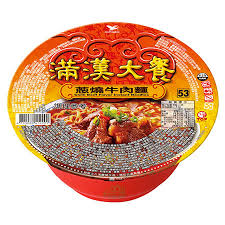

泡麵種類
- 滿漢大餐 
- 來一客
- 維力炸醬麵
滿漢大餐承襲華人宮廷料理-滿漢全席的精髓，以塑造消費者心中最具代表性的豪華即食麵為願景，持續鑽研當代最佳製麵工藝，融合「軟嫩肉塊、層次湯頭、帶勁麵體」做出上乘麵食，讓沒有時間好好用餐、不願將就的您，願意多付出一點、享受好一點，好好犒賞自己味蕾，滿足方便卻不隨便的口感享受！

從品牌創立至今擁有許多的第一，第一杯麵市佔率、首創杯麵音樂行銷....。要吸引消費者持續購買，除了美味的口感，鮮美的湯頭也是主要原因；最初的來一客，熱水沖泡後的湯量稍嫌不足，為了增加豐厚的湯頭口感，特意在產品上修改，讓來一客恰到好處的長高一公分，讓消費者在享受來一客的美味的同時，滿足剛剛好的食慾感。
食用心得:我真的覺得很好吃，只適量有點少，我太胖吃不飽
出道年分：1973年1月
產品介紹：維力食品最膾炙人口的速食麵是「維力炸醬麵」，可以說是臺灣泡麵的代表品牌。由於維力炸醬麵的受歡迎程度，維力食品推出料理醬罐「維力炸醬」。
滿漢大餐
來一客
維力炸醬麵